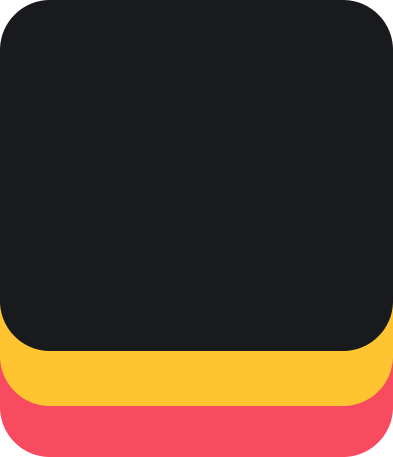

<ion-app>
  <ion-content color="dark">
    <div class="main-visual-container">
      

      <ion-card class="top-text-card">
        <ion-card-content class="ion-text-center">
          <h1>Completa retos y gana recompensas</h1>
          <p>Elige tu ruta, cumple desafíos, deja reseñas y sube de nivel junto a una gran experiencia gastronómica.</p>
        </ion-card-content>
      </ion-card>
    </div>

    <div class="bottom-spacer-area"></div>
  </ion-content>
</ion-app>